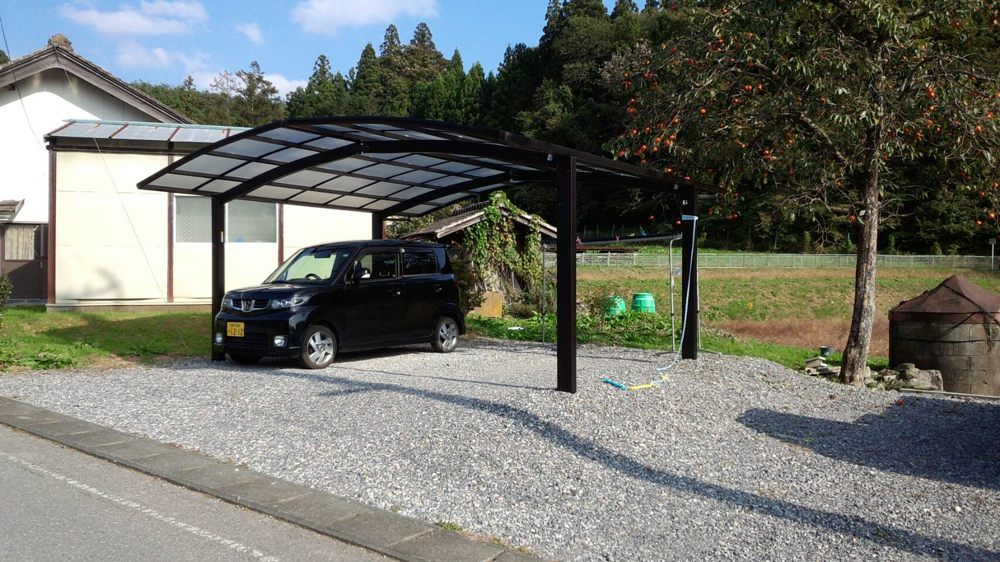
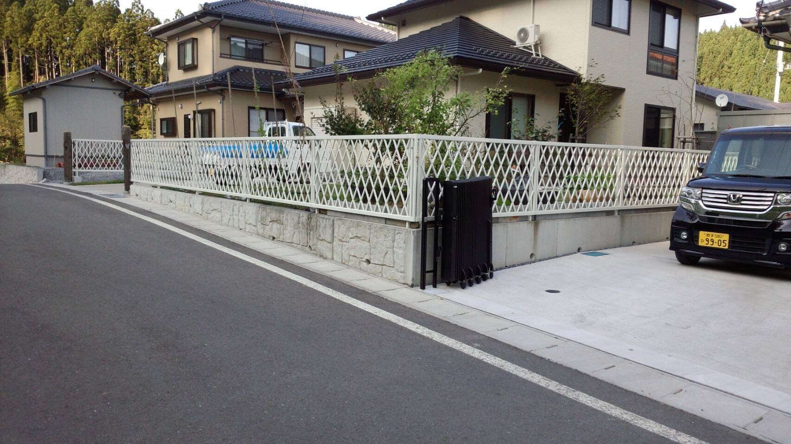
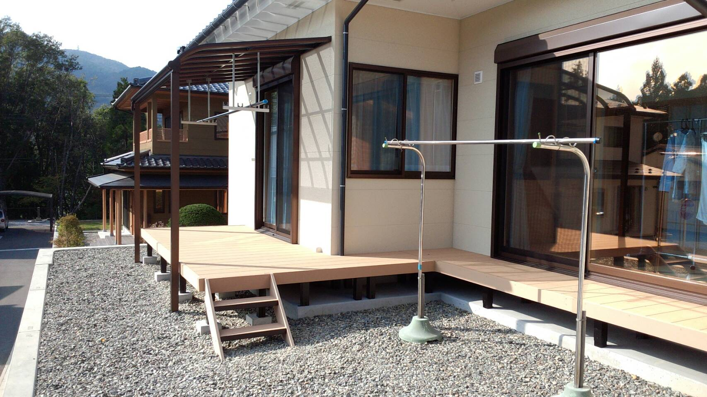

導入事例
カーポート施工
大事なお車の雨や風よけに便利です。 始めに、設置位置や寸法を確認し、お見積りをいたします。施主様の了承後、最終確認で立ち会っていただき、柱の位置決定をしていただきます。 その後取り付け作業を開始いたします。工事期間は２日から3日程度で完了いたします。
フェンス取り付け
フェンスは様々なデザインがあり、好みや用途によって選べます。フェンスを取り付けることに生活空間のプライバシーを守り、 家の外観を装飾したりすることができます。工事期間は２日から３日程度で終了します。
ウッドデッキ施工
最近流行りのウッドデッキです。樹脂のため、雨にぬれても腐る心配もありません。また、お手入れも簡単です。屋根をつけると日差しを遮る ことも可能です。部屋からすぐ外の空間に出られ解放感があります。工事期間は１日から３日程度で完了します。
※紹介したもの以外にも様々なものを取り扱っています。気になる点がございましたら、お問い合わせください。